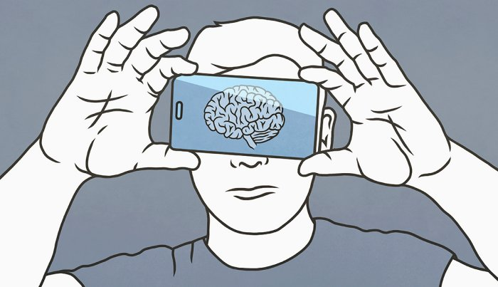

¿Cuáles son las consecuencias en el cerebro de los adolescentes cuando pasan excesivo tiempo frente a sus dispositivos móviles?

Un teléfono inteligente es una máquina extraordinariamente potente para un menor que no tiene capacidad para poder controlar el riesgo que supone
En la actualidad, los adolescentes consideran los teléfonos móviles como una parte esencial de sus vidas. Está comprobado que pasar demasiado tiempo frente a las pantallas puede promover la adopción de comportamientos perjudiciales para la salud, como el sedentarismo, deficiencias nutricionales debido a una dieta poco saludable y alteraciones en los patrones de sueño. Estos factores, además, pueden dar lugar al desarrollo de enfermedades crónicas que representan una carga significativa tanto para el individuo como para la sociedad.
En la actualidad, se aconseja que los adolescentes limiten su tiempo de pantalla móvil a no más de 2 horas al día. Sin embargo, a pesar de estas recomendaciones, la gran mayoría (entre un 70% y un 80%) excede estas pautas de tiempo para actividades de entretenimiento en pantalla (según datos de Estados Unidos y España). Se estima que dedican aproximadamente 4 horas diarias a comportamientos sedentarios relacionados con el uso del teléfono móvil en su tiempo libre, lo cual es motivo de preocupación debido a los posibles efectos perjudiciales a largo plazo para la salud. Además, el aumento en el uso de estas tecnologías plantea inquietudes sobre cómo los patrones de exposición pueden afectar la salud y el bienestar mental de los adolescentes, especialmente porque su sistema nervioso aún se encuentra en desarrollo a esa edad.
Hay evidencia abundante que respalda la conexión entre el empleo de smartphones, la búsqueda constante de estímulos y las dificultades en el desempeño cognitivo diario. Esto sugiere que las autoridades de salud y educativas deberían comenzar a tomar este tema en consideración.
Cada vez se acumulan más pruebas que sugieren que el abuso de los teléfonos inteligentes está relacionado con el deterioro de las funciones cognitivas y trastornos de salud mental en niños, adolescentes y adultos jóvenes. Parece que el excesivo uso de estos dispositivos involucra mecanismos similares a los de otras adicciones, lo que puede llevar a una disminución del control cognitivo y afectar la corteza prefrontal, una región crucial para funciones cognitivas avanzadas como la atención, la toma de decisiones y el procesamiento emocional. Además, puede reducir la capacidad de experimentar placer en la vida cotidiana. De hecho, varios estudios recientes han identificado una relación entre un mayor uso de teléfonos móviles en esta población (5-21 años) y una mayor probabilidad de experimentar síntomas depresivos, ansiedad, hiperactividad, impulsividad, falta de atención y problemas de conducta.
Los niños y adolescentes son particularmente susceptibles a la influencia de la exposición a pantallas, debido a que sus cerebros se encuentran en pleno proceso de desarrollo.
Como mencionamos anteriormente, la población infantil y adolescente muestra una especial susceptibilidad a la influencia de factores externos, como el uso de dispositivos electrónicos, debido al hecho de que sus cerebros aún están en proceso de desarrollo. Durante la adolescencia, se producen cambios significativos tanto en la estructura como en la función cerebral, lo que conlleva la refinación de la conectividad cerebral y la adopción de comportamientos más complejos. Un aspecto crucial de este período de desarrollo radica en el crecimiento del córtex prefrontal, que no alcanza su plena madurez hasta alrededor de los 18-20 años de edad. Esto implica que durante esta etapa se completan los procesos de desarrollo de las funciones cognitivas superiores que están reguladas por esta región del cerebro.
El Instituto de Investigación Sanitaria Pere Virgili ha llevado a cabo un estudio preliminar para investigar la relación entre la exposición a las pantallas de los teléfonos móviles y la salud cognitiva. Este estudio se basó en adolescentes de entre 11 y 16 años. Durante la investigación, se evaluaron datos sobre el tiempo de exposición a las pantallas de los móviles, recopilados a través de cuestionarios realizados en varios institutos de Barcelona, así como datos sobre la función cognitiva de los participantes a través de una serie de pruebas neuropsicológicas, que abordaron aspectos como la atención, la memoria de trabajo y el razonamiento inductivo.
Hemos notado que incluso una exposición diaria de entre 10 y 20 minutos puede tener impactos negativos en la capacidad de atención de los estudiantes. Por lo tanto, podría ser necesario revisar las pautas recomendadas hasta el momento.
En términos generales, los resultados de este estudio indican que la exposición a las pantallas puede influir en la capacidad de los adolescentes sanos para mantener una atención selectiva y continua. Esto se refiere a la habilidad de enfocarse en un estímulo o actividad específica en medio de distracciones, así como de mantener esa atención durante períodos prolongados. Además, hemos observado que incluso una exposición diaria tan breve como 20 minutos puede tener efectos negativos en esta función de atención de los estudiantes.
Aunque se requieren investigaciones adicionales para esclarecer completamente los impactos de la exposición a las pantallas de teléfonos móviles en la función cognitiva durante la etapa de la adolescencia, ya contamos con suficiente evidencia que respalda la relación entre el uso de teléfonos inteligentes, la necesidad de estimulación constante y las deficiencias en el funcionamiento cognitivo diario. Esto sugiere que las autoridades de salud y educación deberían comenzar a tomar en consideración esta cuestión.